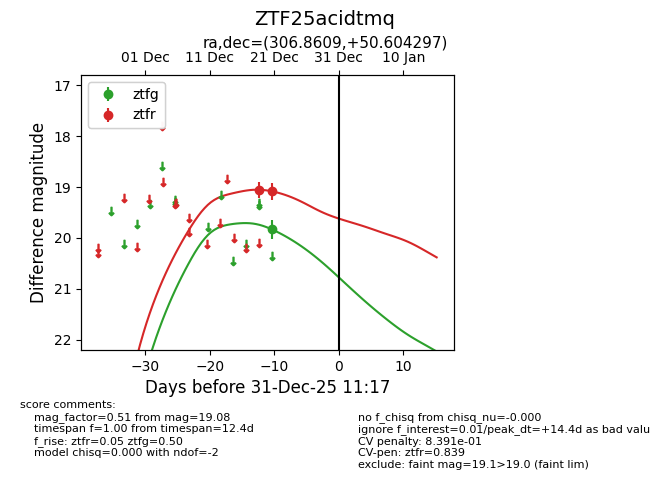
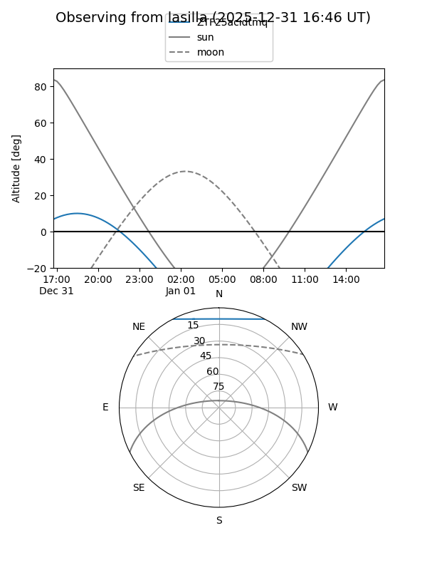
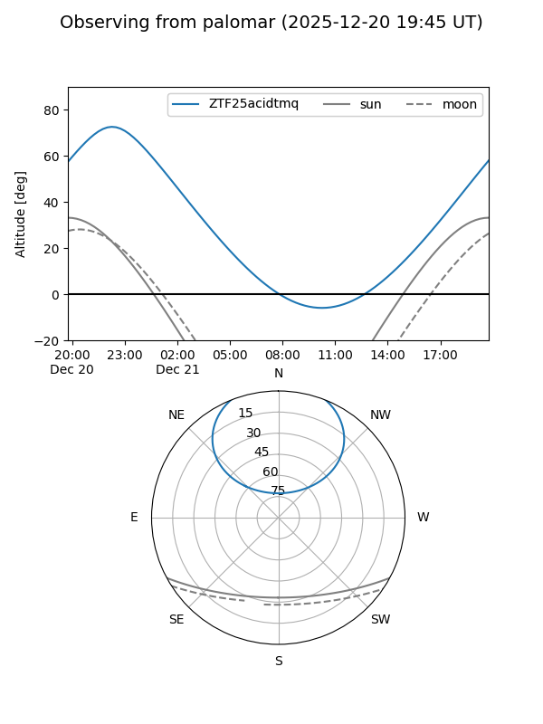
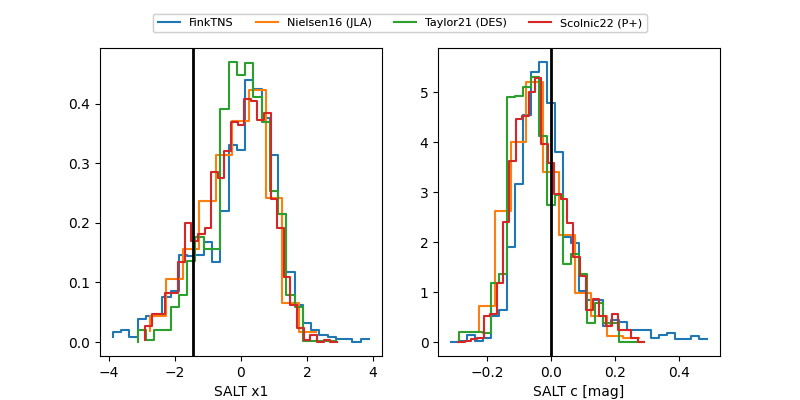

ZTF25acidtmq
Target ZTF25acidtmq at 2025-12-21 03:22
Aliases and brokers:
FINK: fink-portal.org/ZTF25acidtmq
Lasair: lasair-ztf.lsst.ac.uk/objects/ZTF25acidtmq
ALeRCE: alerce.online/object/ZTF25acidtmq
alt names
ZTF25acidtmq (ztf,fink_ztf)
Coordinates:
equatorial (ra, dec) = 306.8609,+50.60430
equatorial (HMS+DMS) = 20:27:26.62,+50:36:15.47
galactic (l, b) = (87.1851,+7.04317)
Flags:
Photometry:
last ztfg=19.83, ztfr=19.05
1 ztfg, 1 ztfr detections
Lightcurve

Visibility


Additional plots
